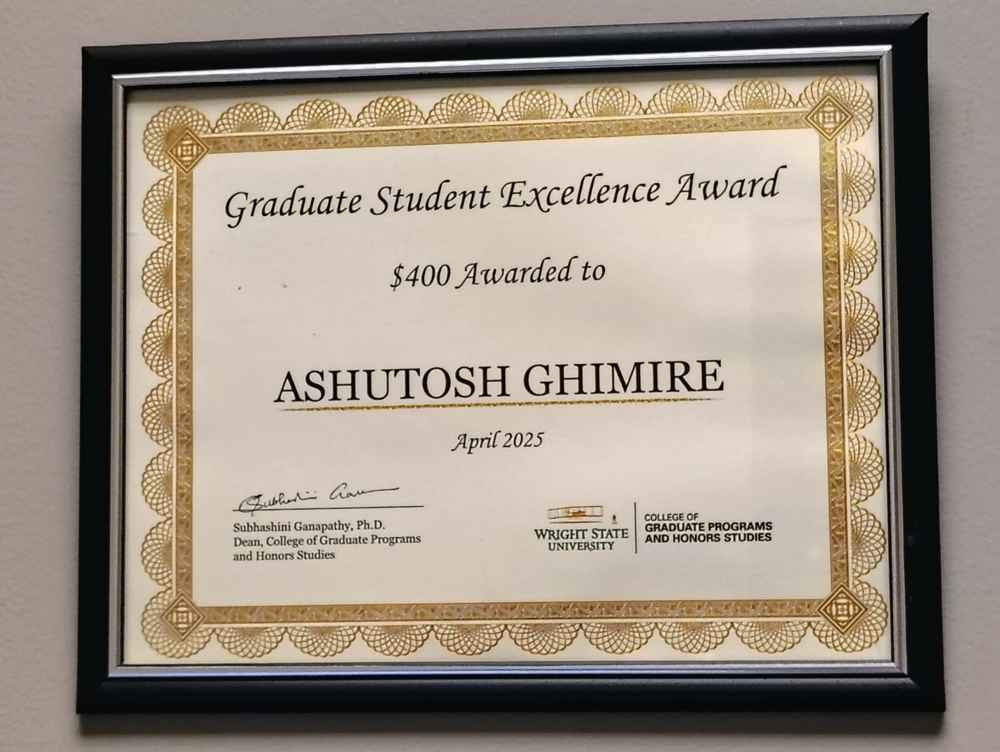

End-to-end experimentation
Built data preprocessing, feature extraction, training, evaluation, and robustness-testing workflows for ML projects across security and scientific domains.
PythonML PipelinesEvaluation
Six years across applied AI research and software engineering — from production REST APIs serving 1,000+ concurrent users to ML pipelines for hardware security and drug discovery.
Built data preprocessing, feature extraction, training, evaluation, and robustness-testing workflows for ML projects across security and scientific domains.
Worked on adversarial robustness, explainability, hardware Trojan detection, IoT security, and model behavior in noisy or adversarial settings.
Brings backend/API experience, Git-based collaboration, Linux/HPC workflows, containers, and performance-focused implementation habits.
Timeline
Wright State University
Wright State University / NSF REU led by WSU and co-led by AFIT
Wright State University
Wright State University
Jeonbuk National University
YBC Services
Bent Ray Technologies
Education
Wright State University
Technical focus: trustworthy AI, hardware security, side-channel analysis, adversarial ML, LLM systems, and AI for security.
Wright State University
Thesis: An ML-Assisted Golden-Free Hardware Trojan Localization and Detection Approach for Trusted Microelectronics.
Tribhuvan University
Engineering foundation in software, systems, and computer engineering.
Skills
Professional Service
Program leadership across conference planning, technical session organization, speaker communication, and on-site coordination for secure and trustworthy cyberinfrastructure research communities.
IEEE Conference on Secure and Trustworthy CyberInfrastructure for IoT and Microelectronics
Under Dr. Fathi Amsaad's guidance, supported work that went beyond day-of volunteering: program structure, session planning, speaker coordination, chair communication, logistics, and recognition materials for the 2025 and 2026 conferences.
Awards and Leadership

Wright State University, April 2025
Awarded by the College of Graduate Programs and Honors Studies with a $400 graduate student excellence award.
Research development under Dr. Fathi Amsaad's guidance
Contributed technical framing and white-paper drafting for a $100K funded Trustworthy AI / Explainable AI initiative.
Wright State University
Managed operations and logistics for a 200+ participant student organization.
SMART Cybersecurity Research Lab
Coordinated research tasks, trained new students, supported documentation, and helped organize lab activities.
{kind=link}
{kind=link}